İlk merhaba senden
Sohbet boşken sıcak bir başlangıç.
UI/UX v2 · Özgün vektör sanat temeli. Bu galeri oyuna bağlanmaz; bakiye, seçim veya oyuncu verisi içermez.
Dört konut katı, her katta üç daire. Giriş ve bahçe ayrı.
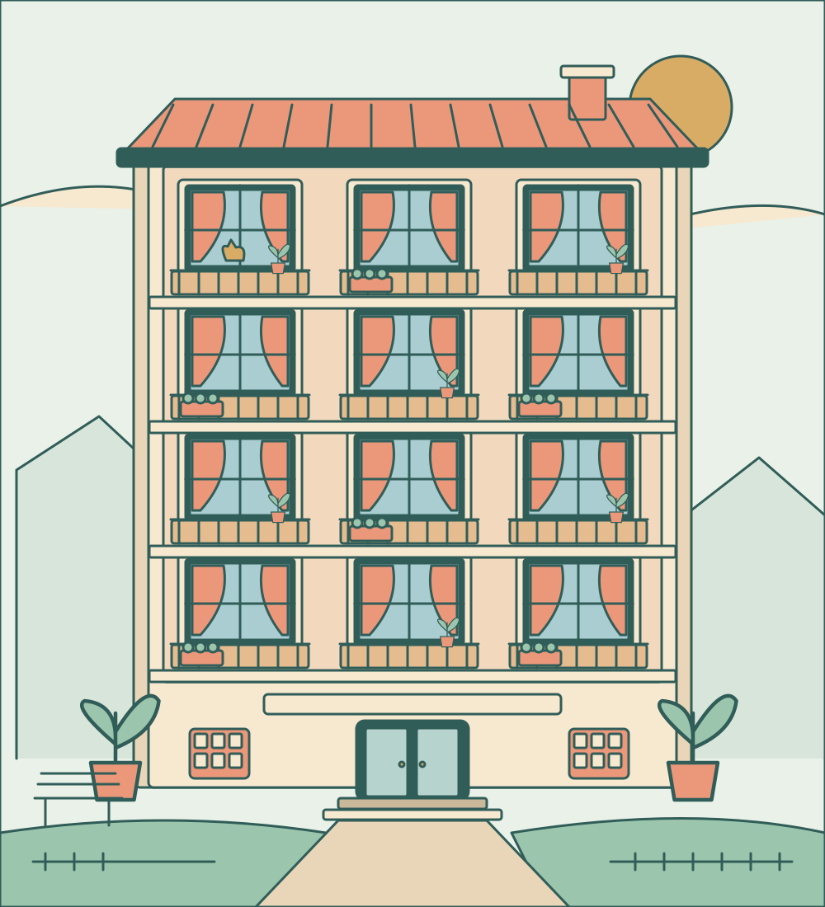
Pencere ayrıntıları sabit dekorasyondur; çevrim içi durum göstermez. İsim ve daire numaraları gelecekte HTML katmanında gösterilecek.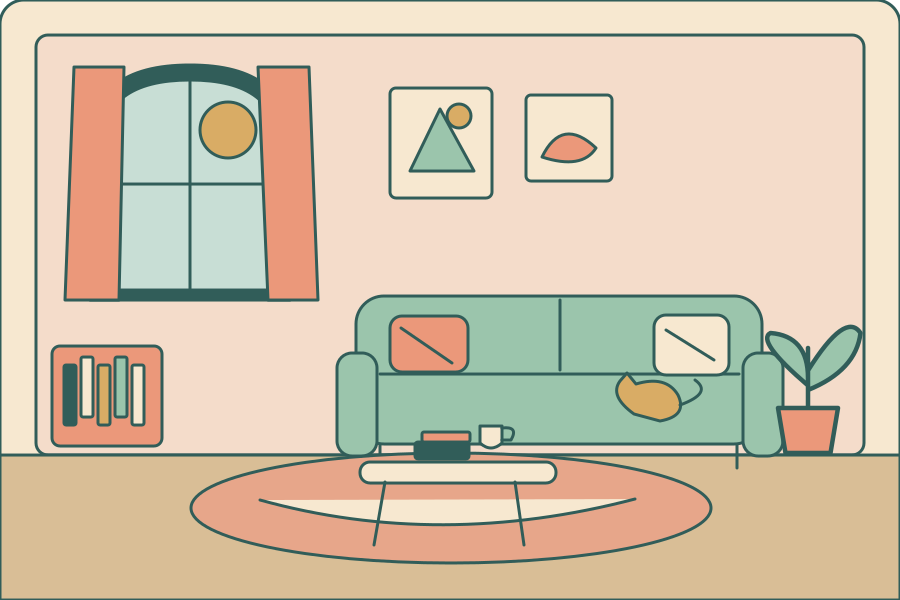
Çizim atmosfer kurar; iş hayatı ve cüzdan alanlarının önüne geçmez.
Menü yalnızca tasarım etüdüdür. Canlı oyunun gezinmesi bu PR’da değişmez.
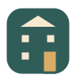
Saç, yüz biçimi, ifade, aksesuar ve kıyafetleri farklı özgün karakterler. Bir oyuncuya atama yapılmaz.
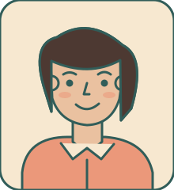
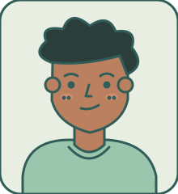
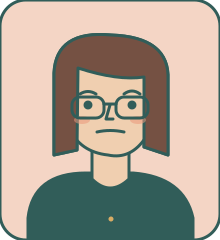
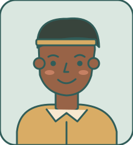
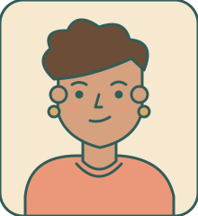
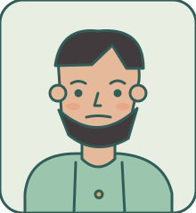
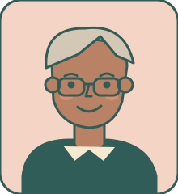
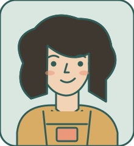
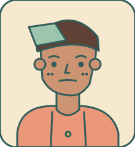
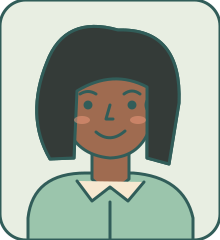
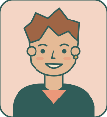
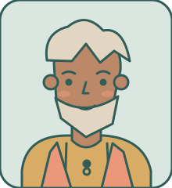
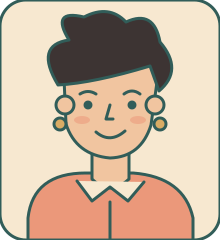
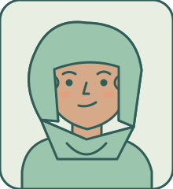
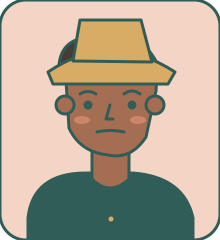
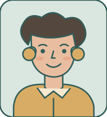
Sohbet boşken sıcak bir başlangıç.
Yeni duyuruların geleceği alan.
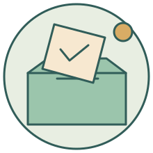
Oylama bulunmayan alan için görsel.